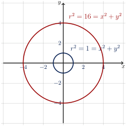
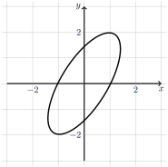
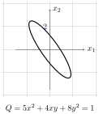
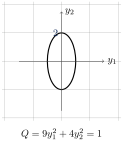

Theorem 14. Theorem.
If \(A\) is a symmetric matrix then there exists an orthogonal change of variable \(\vec x = P \vec y\) that transforms \(\vec x^{\,T} A \vec x\) to \(\vec y^{\,T} D \vec y\) with no cross-product terms.



